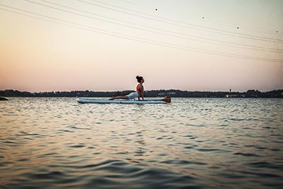
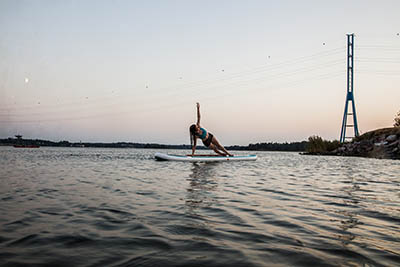
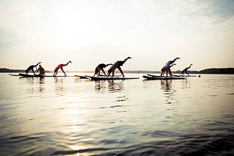
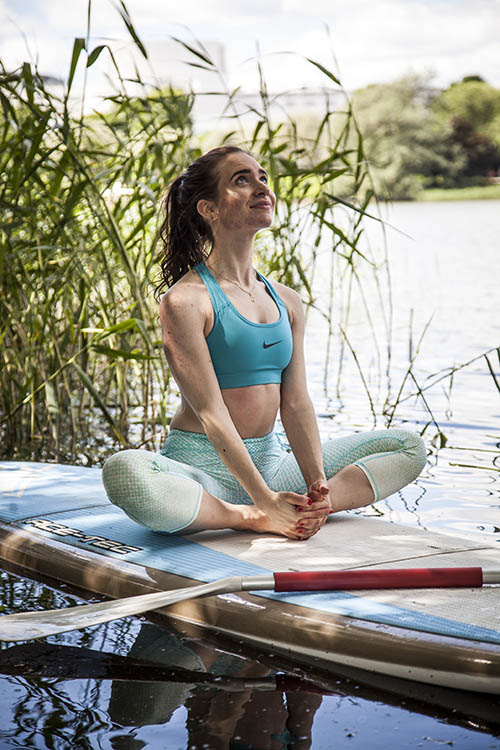

SUP-JOOGATUNTI
SUP-joogatunnille voi osallistua kuka tahansa, eikä aikaisempi joogakokemus ole välttämätöntä. Iloinen ja avoin mieli, halu kokeilla uutta ja uimataito riittävät aloittamaan joogaharjoittelun laudan päällä.
Pukeudu mukaviin urheiluvaatteisiin, joissa sinun on helppo liikkua ja venytellä. Kerrospukeutuminen on suositeltavaa, jotta voit tarvittaessa keventää tai lisätä vaatteita säätilan mukaan.
SUP-joogatunnit järjestetään Helsingin pisteellämme.



Mitä tarvitsen?
Pyyhe, juomapullo, urheiluvaatteet sään mukaisesti (huom. kastuminen on mahdollista joten otathan vaihtovaatteet mukaan).
Kesto:
1.5 tuntia
Hinta:
35€/hlö
Maksu:
Kurssimaksu hoidetaan paikan päällä. Meillä käyvät sekä kortti- että käteismaksut. (VISA, MasterCard, American Express, JCB)
Muuta huomioitavaa:
Kursseillamme on säävaraus. Ilmoitamme edeltävänä päivänä mikäli kurssi joudutaan perumaan.
SUP-JOOGA
SUP-jooga vie harjoituksesi pois matolta veden päälle!
SUP-laudalla joogaharjoitus on hauskaa ja haastavaa. Pääset samalla nauttimaan raikkaasta ulkoilmasta ja upeista maisemista sekä rentoutumaan kuunnellen veden ja luonnon ääniä.
SUP-joogatunti on täydellinen harjoitus koko keholle, sillä siinä yhdistyvät voima ja venyttely. Harjoittelu kehittää erityisesti tasapainoa ja kehonhallintaa. Harjoituksessa syvät lihakset ja erityisesti keskivartalon lihakset työskentelevät paljon.
Harjoituksen kruunaa rentoutuminen SUP-laudan päällä, jossa niin mieli kuin ruumis saavat rauhoittua ja palautua harjoittelusta. Voit kuunnella ja nauttia laineiden liplattelusta, kesäisestä suvituulesta ja upeista luonnon äänistä.
OHJAAJAT

Eveliina Hanski
Eveliina on energinen ja positiivinen joogaopettaja. Itsensä haastamisesta innostuva Eveliina ohjaa SUP-joogaa anatomisesta näkökulmasta, kuitenkin pilke silmäkulmassa! Monipuolisissa SUP-joogaharjoituksissaan Eveliina tarjoaa kaiken tasoisille joogan harrastajille sopivia vaihtoehtoja. Olennaista on hyvä fiilis ja virtaava liike!